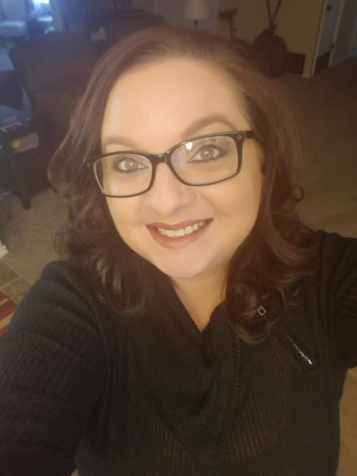
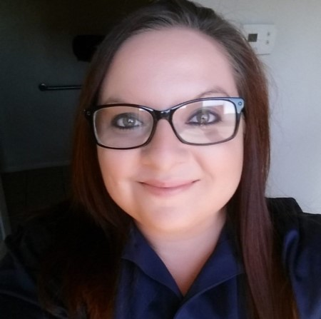

About Me

My name is Jessica Kimball, and I am a born and raised Texas native. I currently work as General Manager for Devon Self Storage, however I am looking for opportunities within the Software Development field. I have 2 dogs, Celie and Jackson, and they are the sweetest fur-babies ever. I come from a tight-knit family and am very close to my parents, siblings, and cousins.
I have been blessed with the opportunity to live in a few other places besides Texas, including Germany and Florida, but Texas will always be home. While in Germany I traveled to Ireland, and I would definitely recommend a trip around Europe to anyone with an adventurous spirit. It is absolutely beautiful. I worked for the Department of Defense during my stay in Germany, and got to meet a lot of wonderful people from all walks of life. I would love to go back one day, but for now I am happy to be a part of the Lone Star State.
Past Experiences

Employment History
| Years of Employment |
Title |
Company |
| 2016-Present |
General Manager |
Devon Self Storage |
| 2011-2016 |
Customer Service Manager |
FlintRiver.com |
| 2006-2007 |
Cash Cage Associate |
AAFES |
One of my greatest accomplishments is the Bachelor's Degree that I earned this year. My focus of study was Information Technology with a concentration in Software Development. I obtained my degree while working full time, as well as taking a full course load each term. It was extremely grueling, and took a great deal of dedication. There were several times along the way that felt so overwhelming, but I knew this was what I wanted to do with my life so I pressed forward and I am proud to say that I made it!
I would say that another aspect of my life of which I am very proud would be my family. A lot of families are close, but we are all each other's best friends, and we spend time together any chance that we can get. We are also all very quick to jump at the chance to help one another, and when something negative happens to one of us, it is "all hands on deck" to help. For example, my middle sister's home burned down a few years ago in the middle of the night. Within the hour, there were 7 of us there - comforting her family and waiting for the firefighters to clear the scene so that we could begin sorting through anything salvagable. I adore my family and don't know what I'd do without them.
Hobbies

- Movies
- The Big Chill
- Gone With the Wind
- Remember the Titans
- Books
- Harry Potter series
- Twilight Series
- Nancy Drew series
- Sports
- Football
- NASCAR
- Basketball
- Outdoor Activities
Anyone who knows me would be very quick to let you know that I have a passion for movies. I always have, ever since I could first work the VCR as a toddler to watch "Wizard of Oz" over and over. I grew to love classic movies like "Gone with the Wind", "It's a Wonderful Life", and anything with Shirley Temple. My love of cinema has grown exponentially, and I have built a collection of almost 700 movies that continues to grow. To me, movies are a wonderful way to escape and forget any day-to-day troubles you might be having, even if just for a little while.
Another hobby of mine is listening to music. This all began with my dad - he took it upon himself to impart in all of us a love for bands like The Beatles, Led Zeppelin, Lynyrd Skynyrd, the Mamas and the Papas, and many more. I always say that there isn't a single emotion on the planet you could be feeling that doesn't have a song to go with it. Music can soothe you when you're upset or anxious, and can amplify your joy when you're in a positive place in life.